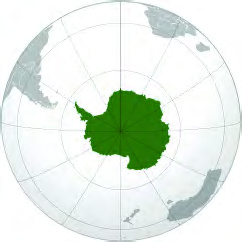
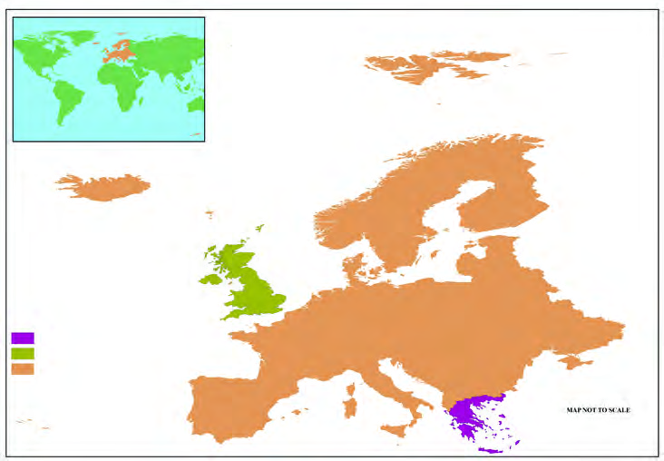
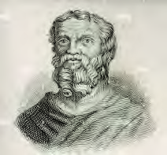
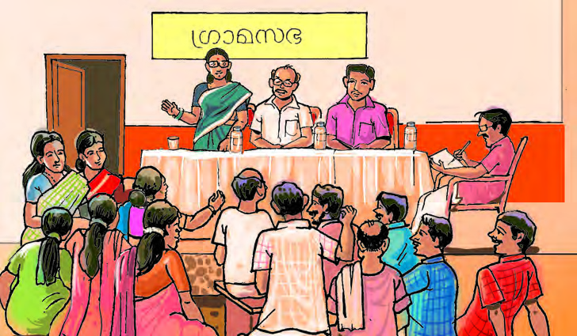

Figure fig_ch05_p082_01 (Page 82)
 Figure fig_ch05_p082_03 (Page 82)
Figure fig_ch05_p082_05 (Page 82)
Figure fig_ch05_p082_06 (Page 82)
Figure fig_ch05_p082_07 (Page 82)
Figure fig_ch05_p082_09 (Page 82)
Figure fig_ch05_p082_10 (Page 82)
Figure fig_ch05_p082_11 (Page 82)
Figure fig_ch05_p082_12 (Page 82)
Figure fig_ch05_p082_13 (Page 82)
Figure fig_ch05_p082_14 (Page 82)
Figure fig_ch05_p082_15 (Page 82)
Figure fig_ch05_p082_03 (Page 82)
Figure fig_ch05_p082_05 (Page 82)
Figure fig_ch05_p082_06 (Page 82)
Figure fig_ch05_p082_07 (Page 82)
Figure fig_ch05_p082_09 (Page 82)
Figure fig_ch05_p082_10 (Page 82)
Figure fig_ch05_p082_11 (Page 82)
Figure fig_ch05_p082_12 (Page 82)
Figure fig_ch05_p082_13 (Page 82)
Figure fig_ch05_p082_14 (Page 82)
Figure fig_ch05_p082_15 (Page 82)
 Figure fig_ch05_p082_16 (Page 82)
Figure fig_ch05_p082_17 (Page 82)
Figure fig_ch05_p082_18 (Page 82)
Figure fig_ch05_p082_19 (Page 82)
Figure fig_ch05_p082_20 (Page 82)
Figure fig_ch05_p082_21 (Page 82)
Figure fig_ch05_p082_22 (Page 82)
Figure fig_ch05_p082_23 (Page 82)
Figure fig_ch05_p082_24 (Page 82)
Figure fig_ch05_p082_25 (Page 82)
Figure fig_ch05_p082_26 (Page 82)
Figure fig_ch05_p082_27 (Page 82)
Figure fig_ch05_p082_28 (Page 82)
Figure fig_ch05_p082_29 (Page 82)
Figure fig_ch05_p082_30 (Page 82)
Figure fig_ch05_p082_31 (Page 82)
Figure fig_ch05_p082_16 (Page 82)
Figure fig_ch05_p082_17 (Page 82)
Figure fig_ch05_p082_18 (Page 82)
Figure fig_ch05_p082_19 (Page 82)
Figure fig_ch05_p082_20 (Page 82)
Figure fig_ch05_p082_21 (Page 82)
Figure fig_ch05_p082_22 (Page 82)
Figure fig_ch05_p082_23 (Page 82)
Figure fig_ch05_p082_24 (Page 82)
Figure fig_ch05_p082_25 (Page 82)
Figure fig_ch05_p082_26 (Page 82)
Figure fig_ch05_p082_27 (Page 82)
Figure fig_ch05_p082_28 (Page 82)
Figure fig_ch05_p082_29 (Page 82)
Figure fig_ch05_p082_30 (Page 82)
Figure fig_ch05_p082_31 (Page 82)

Figure fig_ch05_p082_32 (Page 82)
Figure fig_ch05_p082_33 (Page 82)
 Figure fig_ch05_p082_36 (Page 82)
Figure fig_ch05_p082_37 (Page 82)
Figure fig_ch05_p082_38 (Page 82)
Figure fig_ch05_p082_36 (Page 82)
Figure fig_ch05_p082_37 (Page 82)
Figure fig_ch05_p082_38 (Page 82)
Figure fig_ch05_p083_01 (Page 83)
Figure fig_ch05_p083_02 (Page 83)
Figure fig_ch05_p083_03 (Page 83)
Figure fig_ch05_p083_04 (Page 83)
Figure fig_ch05_p083_05 (Page 83)
Figure fig_ch05_p085_02 (Page 85)
Figure fig_ch05_p085_03 (Page 85)
Figure fig_ch05_p085_04 (Page 85)
Figure fig_ch05_p085_05 (Page 85)
Figure fig_ch05_p085_06 (Page 85)
Figure fig_ch05_p085_07 (Page 85)
Figure fig_ch05_p085_08 (Page 85)
Figure fig_ch05_p085_09 (Page 85)
Figure fig_ch05_p085_10 (Page 85)
Figure fig_ch05_p085_11 (Page 85)
 Figure fig_ch05_p085_12 (Page 85)
Figure fig_ch05_p085_13 (Page 85)
Figure fig_ch05_p085_14 (Page 85)
Figure fig_ch05_p085_15 (Page 85)
Figure fig_ch05_p085_16 (Page 85)
Figure fig_ch05_p085_17 (Page 85)
Figure fig_ch05_p085_18 (Page 85)
Figure fig_ch05_p085_19 (Page 85)
Figure fig_ch05_p085_20 (Page 85)
Figure fig_ch05_p085_21 (Page 85)
Figure fig_ch05_p085_23 (Page 85)
Figure fig_ch05_p085_12 (Page 85)
Figure fig_ch05_p085_13 (Page 85)
Figure fig_ch05_p085_14 (Page 85)
Figure fig_ch05_p085_15 (Page 85)
Figure fig_ch05_p085_16 (Page 85)
Figure fig_ch05_p085_17 (Page 85)
Figure fig_ch05_p085_18 (Page 85)
Figure fig_ch05_p085_19 (Page 85)
Figure fig_ch05_p085_20 (Page 85)
Figure fig_ch05_p085_21 (Page 85)
Figure fig_ch05_p085_23 (Page 85)

Figure fig_ch05_p086_01 (Page 86)
Figure fig_ch05_p086_03 (Page 86)
Figure fig_ch05_p086_04 (Page 86)

Figure fig_ch05_p086_06 (Page 86)
 Figure fig_ch05_p086_07 (Page 86)
Figure fig_ch05_p086_08 (Page 86)
Figure fig_ch05_p086_07 (Page 86)
Figure fig_ch05_p086_08 (Page 86)
 Figure fig_ch05_p087_01 (Page 87)
Figure fig_ch05_p087_01 (Page 87)

Figure fig_ch05_p087_02 (Page 87)
Figure fig_ch05_p087_03 (Page 87)
Figure fig_ch05_p087_04 (Page 87)
Figure fig_ch05_p087_05 (Page 87)
Figure fig_ch05_p087_06 (Page 87)
 Figure fig_ch05_p087_07 (Page 87)
Figure fig_ch05_p087_07 (Page 87)
 Figure fig_ch05_p087_08 (Page 87)
Figure fig_ch05_p087_10 (Page 87)
Figure fig_ch05_p087_11 (Page 87)
Figure fig_ch05_p087_08 (Page 87)
Figure fig_ch05_p087_10 (Page 87)
Figure fig_ch05_p087_11 (Page 87)
Figure fig_ch05_p090_03 (Page 90)
Figure fig_ch05_p090_04 (Page 90)
Figure fig_ch05_p090_05 (Page 90)
Figure fig_ch05_p090_06 (Page 90)
Figure fig_ch05_p090_07 (Page 90)
Figure fig_ch05_p090_08 (Page 90)
Figure fig_ch05_p090_09 (Page 90)
 Figure fig_ch05_p090_10 (Page 90)
Figure fig_ch05_p090_11 (Page 90)
Figure fig_ch05_p090_12 (Page 90)
Figure fig_ch05_p090_14 (Page 90)
Figure fig_ch05_p090_15 (Page 90)
Figure fig_ch05_p090_16 (Page 90)
Figure fig_ch05_p090_17 (Page 90)
Figure fig_ch05_p090_18 (Page 90)
Figure fig_ch05_p090_10 (Page 90)
Figure fig_ch05_p090_11 (Page 90)
Figure fig_ch05_p090_12 (Page 90)
Figure fig_ch05_p090_14 (Page 90)
Figure fig_ch05_p090_15 (Page 90)
Figure fig_ch05_p090_16 (Page 90)
Figure fig_ch05_p090_17 (Page 90)
Figure fig_ch05_p090_18 (Page 90)
 Figure fig_ch05_p090_23 (Page 90)
Figure fig_ch05_p090_24 (Page 90)
Figure fig_ch05_p090_25 (Page 90)
Figure fig_ch05_p090_23 (Page 90)
Figure fig_ch05_p090_24 (Page 90)
Figure fig_ch05_p090_25 (Page 90)
Figure fig_ch05_p093_01 (Page 93)
 Figure fig_ch05_p093_02 (Page 93)
Figure fig_ch05_p093_03 (Page 93)
Figure fig_ch05_p093_04 (Page 93)
Figure fig_ch05_p093_05 (Page 93)
Figure fig_ch05_p093_06 (Page 93)
Figure fig_ch05_p093_08 (Page 93)
Figure fig_ch05_p093_10 (Page 93)
Figure fig_ch05_p093_12 (Page 93)
Figure fig_ch05_p093_13 (Page 93)
Figure fig_ch05_p093_14 (Page 93)
Figure fig_ch05_p093_02 (Page 93)
Figure fig_ch05_p093_03 (Page 93)
Figure fig_ch05_p093_04 (Page 93)
Figure fig_ch05_p093_05 (Page 93)
Figure fig_ch05_p093_06 (Page 93)
Figure fig_ch05_p093_08 (Page 93)
Figure fig_ch05_p093_10 (Page 93)
Figure fig_ch05_p093_12 (Page 93)
Figure fig_ch05_p093_13 (Page 93)
Figure fig_ch05_p093_14 (Page 93)
 Figure fig_ch05_p094_01 (Page 94)
Figure fig_ch05_p094_02 (Page 94)
Figure fig_ch05_p094_04 (Page 94)
Figure fig_ch05_p094_01 (Page 94)
Figure fig_ch05_p094_02 (Page 94)
Figure fig_ch05_p094_04 (Page 94)
Figure fig_ch05_p095_01 (Page 95)
Figure fig_ch05_p095_02 (Page 95)
Figure fig_ch05_p095_03 (Page 95)
Figure fig_ch05_p095_04 (Page 95)
Figure fig_ch05_p095_05 (Page 95)
Figure fig_ch05_p095_06 (Page 95)
Figure fig_ch05_p095_07 (Page 95)
 Figure fig_ch05_p095_08 (Page 95)
Figure fig_ch05_p095_09 (Page 95)
Figure fig_ch05_p095_11 (Page 95)
Figure fig_ch05_p095_12 (Page 95)
Figure fig_ch05_p095_13 (Page 95)
Figure fig_ch05_p095_14 (Page 95)
Figure fig_ch05_p095_15 (Page 95)
Figure fig_ch05_p095_16 (Page 95)
Figure fig_ch05_p095_18 (Page 95)
Figure fig_ch05_p095_20 (Page 95)
Figure fig_ch05_p095_21 (Page 95)
Figure fig_ch05_p095_22 (Page 95)
Figure fig_ch05_p095_23 (Page 95)
Figure fig_ch05_p095_24 (Page 95)
Figure fig_ch05_p095_25 (Page 95)
Figure fig_ch05_p095_26 (Page 95)
Figure fig_ch05_p095_27 (Page 95)
Figure fig_ch05_p095_28 (Page 95)
Figure fig_ch05_p095_29 (Page 95)
Figure fig_ch05_p095_30 (Page 95)
Figure fig_ch05_p095_31 (Page 95)
Figure fig_ch05_p095_32 (Page 95)
Figure fig_ch05_p095_33 (Page 95)
Figure fig_ch05_p095_34 (Page 95)
Figure fig_ch05_p095_35 (Page 95)
Figure fig_ch05_p095_36 (Page 95)
Figure fig_ch05_p095_37 (Page 95)
Figure fig_ch05_p095_38 (Page 95)
Figure fig_ch05_p095_39 (Page 95)
Figure fig_ch05_p095_40 (Page 95)
Figure fig_ch05_p095_41 (Page 95)
Figure fig_ch05_p095_42 (Page 95)
Figure fig_ch05_p095_43 (Page 95)
Figure fig_ch05_p095_44 (Page 95)
Figure fig_ch05_p095_45 (Page 95)
Figure fig_ch05_p095_46 (Page 95)
Figure fig_ch05_p095_47 (Page 95)
Figure fig_ch05_p095_48 (Page 95)
Figure fig_ch05_p095_49 (Page 95)
Figure fig_ch05_p095_50 (Page 95)
Figure fig_ch05_p095_51 (Page 95)
Figure fig_ch05_p095_52 (Page 95)
Figure fig_ch05_p095_55 (Page 95)
Figure fig_ch05_p095_08 (Page 95)
Figure fig_ch05_p095_09 (Page 95)
Figure fig_ch05_p095_11 (Page 95)
Figure fig_ch05_p095_12 (Page 95)
Figure fig_ch05_p095_13 (Page 95)
Figure fig_ch05_p095_14 (Page 95)
Figure fig_ch05_p095_15 (Page 95)
Figure fig_ch05_p095_16 (Page 95)
Figure fig_ch05_p095_18 (Page 95)
Figure fig_ch05_p095_20 (Page 95)
Figure fig_ch05_p095_21 (Page 95)
Figure fig_ch05_p095_22 (Page 95)
Figure fig_ch05_p095_23 (Page 95)
Figure fig_ch05_p095_24 (Page 95)
Figure fig_ch05_p095_25 (Page 95)
Figure fig_ch05_p095_26 (Page 95)
Figure fig_ch05_p095_27 (Page 95)
Figure fig_ch05_p095_28 (Page 95)
Figure fig_ch05_p095_29 (Page 95)
Figure fig_ch05_p095_30 (Page 95)
Figure fig_ch05_p095_31 (Page 95)
Figure fig_ch05_p095_32 (Page 95)
Figure fig_ch05_p095_33 (Page 95)
Figure fig_ch05_p095_34 (Page 95)
Figure fig_ch05_p095_35 (Page 95)
Figure fig_ch05_p095_36 (Page 95)
Figure fig_ch05_p095_37 (Page 95)
Figure fig_ch05_p095_38 (Page 95)
Figure fig_ch05_p095_39 (Page 95)
Figure fig_ch05_p095_40 (Page 95)
Figure fig_ch05_p095_41 (Page 95)
Figure fig_ch05_p095_42 (Page 95)
Figure fig_ch05_p095_43 (Page 95)
Figure fig_ch05_p095_44 (Page 95)
Figure fig_ch05_p095_45 (Page 95)
Figure fig_ch05_p095_46 (Page 95)
Figure fig_ch05_p095_47 (Page 95)
Figure fig_ch05_p095_48 (Page 95)
Figure fig_ch05_p095_49 (Page 95)
Figure fig_ch05_p095_50 (Page 95)
Figure fig_ch05_p095_51 (Page 95)
Figure fig_ch05_p095_52 (Page 95)
Figure fig_ch05_p095_55 (Page 95)
 Figure fig_ch05_p095_56 (Page 95)
Figure fig_ch05_p095_57 (Page 95)
Figure fig_ch05_p095_56 (Page 95)
Figure fig_ch05_p095_57 (Page 95)
Figure fig_ch05_p096_01 (Page 96)
 Figure fig_ch05_p096_02 (Page 96)
Figure fig_ch05_p096_04 (Page 96)
Figure fig_ch05_p096_05 (Page 96)
Figure fig_ch05_p096_08 (Page 96)
Figure fig_ch05_p096_09 (Page 96)
Figure fig_ch05_p096_02 (Page 96)
Figure fig_ch05_p096_04 (Page 96)
Figure fig_ch05_p096_05 (Page 96)
Figure fig_ch05_p096_08 (Page 96)
Figure fig_ch05_p096_09 (Page 96)